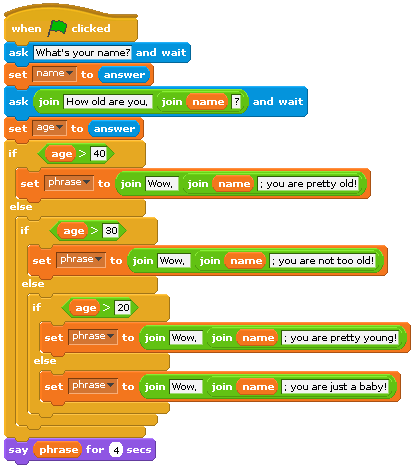
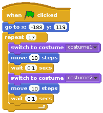
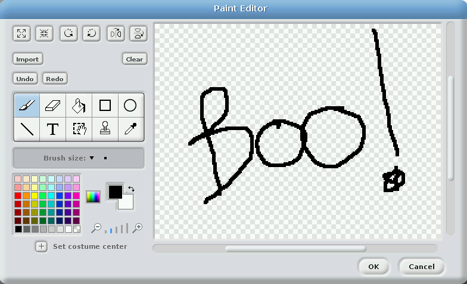
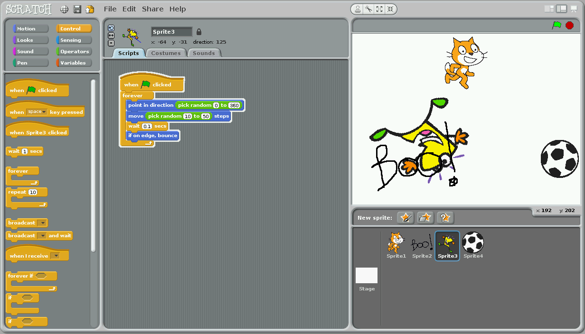

In this activity, you will use the Scratch programming language to practice your algorithm skills by designing a simple game.
You will need:
Raspberry Pi 4 Le Potato with power adapter
LCD touchscreen; and
keyboard and mouse
Terminal Tip
You can use your usual laptop for this pi activity since it does not rely on the GPIO functionality of the raspberry pi. Should you choose to do so, make sure to install the appropriate version of Scratch on your laptop.
The goal of this activity is to introduce you to the Scratch programming language and take you through the process of making a simple game in Scratch. Various programming constructs will be utilized and discussed (e.g., data types, constants, variables, sequence, selection, repetition, etc).
Although you won’t actually design complex programs that solve interesting problems (yet), you will explore algorithm design and computer programming in Scratch, a visual programming language that replaces syntax with puzzle pieces. Unlike programming languages that are used in practice (e.g., C++, Java, Python), Scratch is intended for education and provides a great starting point for novice programmers. But don’t get boxed in to the idea that Scratch is somehow not powerful. In fact, it is actually quite powerful and allows you to create games, animations, and interactive stories.
2 Scratch.
Scratch is a basic programming language that utilizes puzzle pieces to represent the properties in the language (e.g., sequence, selection, and repetition). The programmer decides what pieces to use in order to implement the algorithm, and the puzzle pieces help identify what actions or statements can fit with each other and in what order they will be executed. More robust languages such as Python are entirely text-based where statements are text instructions used to represent actions.
In real physical puzzles, certain pieces have meaning and can only be used in certain places (e.g., edge pieces and corner pieces). This is similar in Scratch, in that certain pieces have meaning and must be used in certain places in our programs. Some of a puzzle’s pieces can only be combined with certain other pieces so that they make sense.
Scratch programs consist of scripts and is sprite driven. That is, a set of scripts can be defined for each sprite in a Scratch program (which we can more appropriately call a project). Scripts that are executed when the green flag is clicked can be defined for each sprite, and these scripts will execute simultaneously for each sprite! Sprites can communicate by way of broadcasting messages that can be received by other sprites. This is, in a way, a characteristic of object-oriented programming languages, where objects can communicate with each other by sending messages.
Scratch scripts are made up of various puzzle pieces (or blocks) that serve various functions. Blocks in the motion group provide programming constructs that deal with the movement or placement of sprites, while blocks in the looks group control anything related to the appearance of sprites (e.g., costume, graphical effect). Sound blocks provide the ability to incorporate sound in our Scratch programs, and pen blocks allow us to draw on the stage. Control blocks provide some of the most powerful functionality in Scratch. They allow us to implement selection and repetition quite easily, and in a variety of useful ways. They also provide ways to allow communication among sprites and to specify 1scripts to perform when events occur (e.g., when the green flag is clicked). Blocks in the sensing group provide ways of specifying input to our programs. We can, for example, detect if a sprite is touching another (and then specify some sort of action if desired). Blocks in the operators group provide math and string capabilities, something quite useful in our programs. These blocks allow us to compare values in order to determine an action to perform. Lastly, blocks in the variables group permit us to define variables and lists (i.e., a group of values). This is useful in virtually all programs, and you will find that declaring variables will become pretty routine.
3 Starting Scratch
3.1 Launching Scratch
To begin, let’s select Scratch from the menu
Where is Scratch on my Potato
Terminal Tip
This might look a little different on your raspberry pi or potato.
If you selected to use your laptop, then it will definitely look different but you should still be able to identify where it is and select it.’
After a short while, the Scratch interface will be displayed:
Scratch ver 1.4 home page
Terminal Tip
The scratch images shown on this page are taken using Scratch ver 1.4. We recommend that you actually use Scratch ver 3 instead as it has more updated options. However, in the event that your computer does not allow easy installation of version 3, we shall leave these instructions in ver 1.4
Although the interface looks a bit complicated, it really isn’t. We won’t make use of everything at first; however, here is an overview of the interface components:
What are all the things I see on the scratch home page?
The Scratch interface is quite busy; however, there are three main areas that you will find yourself interacting with often: the blocks palette, the scripts area, and the stage.
The blocks palette panel provides a variety of useful constructs that allow you to write programs. In total, there are eight different block types, accessible by clicking the groups in the top-left of the interface:
Motion: anything related to the movement or placement of sprites (graphics);
Looks: anything related to the appearance of sprites;
Sound: anything related to incorporating sound in your programs;
Pen: anything related to the pen which allows drawing on the canvas (background);
Control: anything related to controlling the flow of programs;
Sensing: anything related to detecting things (like movement, collisions, etc);
Operators: anything related to math functions and string handling; and
Variables: anything related to the declaration and upkeep of variables.
The scripts area is where you define your computer programs. This is done by dragging various blocks from the blocks palette and connecting them to make a program. It’s almost like solving a jigsaw puzzle. 3In fact, blocks have different types of notches and ridges that allow them to match up only to certain other blocks. This helps simplify the design of programs.
The stage is where your programs are executed. It’s where to look to see if your code works…or not. On the stage, we can place sprites (graphics), variables, text, and drawings. At the top-right of the stage, a green flag and a red stop sign are used to start and stop your programs. The stage implements a two- dimensional coordinate system, where x and y represent the horizontal and vertical axes respectively. On our system with the LCD touchscreen, the center of the stage is at the point (0,0); the top-left corner is at (-240,180); the bottom-right corner is at (240,-180). Note that the stage is actually much larger (i.e., the cat sprite could technically be moved out of the viewable area of the stage).
3.2 Your first Scratch Program
Let’s create a simple program. Your task will be to move the cat sprite on the canvas. One useful block in the control blocks group is the when green flag clicked block. It is used to specify what to do when the green flag at the top of the stage is clicked (in other words, what to do when your program starts). We can add it to the scripts area by dragging it from the control blocks group in the blocks palette. Let’s also add the first instruction to move 10 steps (pixels) in the direction the cat is facing (i.e., to the right). For this, we can utilize a block in the motion blocks group. Drag the move steps block to the scripts area until it snaps in place beneath the green flag block:
Click on the green flag in the top-right corner of the stage to run this program. You will notice that the cat moves very quickly a very small distance to the right. Click the green flag several times so that the cat repeatedly moves to the right a bit more.
Modify the program to move a different number of steps by changing the value in the move 10 steps block to something like -100 (which will move the sprite 100 pixels in the opposite direction that the cat is facing). Click the field that specifies the number of steps and replace 10 with -100:
Clicking the green flag a few times moves the cat to the left quickly. This movement is too quick and quite joggy. In the motion blocks group, a glide 5 secs to x,y block allows motion to be more specifically defined. Let’s replace the move steps block with this new block. To remove the move steps block, drag it away from the green flag block (you can just put it to the side if you anticipate using it again, or drag it back to the blocks palette to trash it). Tweak the values as you wish in the new motion block and watch the cat move smoothly to the specified coordinates:
You can actually click on the cat sprite to move it anywhere on the stage; then try running your program again.
3.3 An Improvement
Let’s combine blocks to form a more complicated program. Create the following program and run it:
You’ll notice that the program moves the cat around the perimeter of the stage, pointing in the direction of travel as it does so. How could the program be modified to repeat this some number of times (like 2)? There is a repeat block in the control blocks group that can be used to repeat an action some number of times.
Modify your program as follows:
Some of you will notice that the first two motion blocks (point in direction 90 and go to x,y) can be moved out of and above the repeat block. Try it. You probably won’t notice much difference, but these two blocks serve to initially orient and position the cat sprite. This really only needs to be done once at the beginning of the program.
At this point, let’s cover some of the basic features of programming languages before continuing with the game.
4 Data types, constants, and variables.
The kinds of values that can be expressed in a programming language are known as its data types. Scratch supports only two data types: text and numbers. The text data type provides the ability to represent non-numeric data such as names, addresses, English phrases, etc. The numeric data type allows the language to manipulate numbers, both positive and negative, whole numbers and fractions.
A constant is defined as a value of a particular type that does not change over time. Both numbers and text may be expressed as constants in Scratch. Numeric constants are composed of the digits 0 through 9 and, optionally, a negative sign (for negative numbers), and a decimal point (for floating point numbers). Numeric constants may not contain commas, dollar signs, or any other special symbols. The following are valid Scratch numeric constants: +15, -150, 15.01, 3200.
A text constant consists of a sequence of characters (also known as a string of characters – or just a string). The following are examples of valid string constants:
“She turned me into a newt.”
“I got better.”
“Very small rocks.”
Note that the quotes surrounding the strings are not actually necessary to define a text constant in Scratch BUT they are very essential in more standard programming languages to differentiate strings (words important to the program user) from commands and variables (words important to the programmer and computer)
A variable is defined to be a named object that can store a value of a particular type. Scratch supports two types of variables: text variables and numeric variables. Before a variable can be used, its name must be declared. Variables are declared in Scratch through the variables blocks group.
5 Input and output statements
In order for a computer program to perform any useful work, it must be able to communicate with the outside world. The process of communicating with the outside world is known as input/output (or I/O). Scratch includes various input and output statements, although they are not implemented in the same way as other real programming languages such as Python or Java.
For example, in Scratch, individual sprites can say something for n secs or think something for n secs, displaying voice or thought bubbles with text. These are located in the looks blocks group. Sprites can also switch costumes, and programs can play sounds, draw with the pen, and so on. These are all output statements. Input statements include sensing when sprites are touching (or near) other sprites, or at the edge of the stage. Scratch can also ask the user for input (either text or numeric), and store this input to a variable. Many input statements in Scratch are located in the sensing blocks group. Most imperative languages include mechanisms for performing other kinds of I/O such as detecting where the mouse is pointing and accessing the contents of a disk drive.
The flexibility and power that input statements give programming languages cannot be overstated. Without them the only way to get a program to change its output would be to modify the program code itself, which is something that a typical user cannot be expected to do.
General-purpose programming languages allow human programmers to construct programs that do amazing things. When attempting to understand what a program does, however, it is vitally important to always keep in mind that the computer does not comprehend the meaning of the character strings it manipulates or the significance of the calculations it performs. Take, for example, the following simple Scratch program:
This program simply displays strings of characters, stores user input, and echoes that input back to the screen along with some additional character strings. The computer has no clue what the text string “Please enter your name.” means. For all it cares, the string could have been “My hovercraft is full of eels.” or “qwerty uiop asdf ghjkl;” (or any other text string for that matter). Its only concern is to copy the characters of the text string onto the display screen.
Only in the minds of human beings do the sequence of characters “Please enter your name.” take on meaning. If this seems odd, try to remember that comprehension does not even occur in the minds of all humans, only those who are capable of reading and understanding written English. A four year old, for example, would not know how to respond to this prompt because he or she would be unable to read it. This is so despite the fact that if you were to ask the child his or her name, he or she could immediately respond and perhaps even type it out on the keyboard for you.
Consider this Scratch program:
Here, input is numeric instead of text. The program prompts the user for two numbers, which it then computes the sum for and displays to the user. Note that two variables were declared in the variables blocks group: num1 and num2. The first number is captured and stored in the variable num1. The second number is captured and stored in the variable num2. What do you think would happen if the user did not provide numeric input and, for example, inputted “Bob” for the first number? In the real world, programmers must create robust programs that examine user input in order to verify that it is of the proper type before processing that input. If the input is found to be in error, the program must take appropriate corrective action, such as rejecting the invalid input and requesting the user try again.
6 Primary Control Constructs
In order to create programs capable of solving more complex tasks we need to examine how the basic instructions we have studied can be organized into higher-level constructs. The vast majority of imperative programming languages support three types of control constructs which are used to group individual statements together and specify the conditions under which they will be executed. These control constructs are: sequence, selection, and repetition.
6.1 Sequence
Sequence requires that the individual statements of a program be executed one after another, in the order that they appear in the program. Sequence is defined implicitly by the physical order of the statements. It does not require an explicit program structure. This is related to our previous discussion on control flow.
In Scratch, sequence is almost too trivial because of the way the puzzle pieces are arranged. If one piece is attached to the top of a second piece, then the piece on top will be completely executed before the botton piece is executed.
6.2 Selection
Selection constructs contain one or more blocks of statements and specify the conditions under which the blocks should be executed. Basically, selection allows a human programmer to include within a program one or more blocks of optional code along with some tests that the program can use to determine which one of the blocks to perform. Selection allows imperative programs to choose which particular set of actions to perform, based on the conditions that exist at the time the construct is encountered during program execution.
Selection statements give imperative languages the ability to make choices based on the results of certain condition tests. These condition tests take the form of Boolean expressions, which are expressions that evaluate to either true or false. There are various types of Boolean expressions, but the types supported in Scratch are based on relational operators. Relational operators compare two expressions of like type to determine whether their values satisfy some criterion. The general form of all Boolean expressions supported in Scratch is:
expression relational_operator expression
For example:
Scratch includes three relational operators for comparing numeric expressions:
< meaning less than
= meaning equal to
> meaning greater than
For example, when x is 15 and y is 25, the expression x > y evaluates to false, since 15 is not greater than 25. Here are some additional examples of Boolean expressions that use these relational operators. These examples assume that the variable x holds 15 and y holds 25:
true
true
false
Notice that the last expression always evaluates to false regardless of the value of x. This is because there is no possible value for x that will be equal to that value plus one. Another point illustrated by these examples is that relational operators have a lower precedence than mathematical operators. During expression evaluation, all multiplication, division, addition, and subtraction operations are performed before any relational operations.
The relational operators also work for text expressions as follows:
< meaning preceeds
= meaning equal to
> meaning follows
Note that Scratch does not differentiate between uppercase and lowercase letters. That is, A is equal to a. Here are some examples, assuming that the variable x holds Bob and y holds bobcat:
false
false
true
Since Bob precedes bobcat in alphabetical order, Bob < bobcat is true.
Selection statements use the results of Boolean expressions to choose which sequence of actions to perform next. Scratch supports two different selection statements: if-else and if. An if-else statement allows a program to make a two-way choice based on the result of a Boolean expression.
The general form of an if-else statements is shown below:
Any statements that are to be executed if the condition is true are placed in the top/if half of the puzzle piece. Any statements that are to be executed if the condition is false are placed in the bottom/else half.
If-else statements specify a Boolean expression and two separate blocks of code: one that is to be executed if the expression is true, the other to be executed if the expression is false. Here’s a flowchart for an if-else statement:
And here’s an example of a program that implements an if-else statement (several, actually):

This program prompts the user to enter a name and age, and responds appropriately. It compares the user’s age to several constants (40, 30, and 20), and sets the variable phrase depending on the user’s age. If the user’s age is more than 40, then the program responds that the user is pretty old; otherwise, the program then checks to see if the user’s age is more than 30. If so, the program responds that the user is not too old; otherwise, it then checks to see if the user’s age is more than 20. If so, it responds that the user is pretty young; otherwise (any age less than or equal to 20), it responds that the user is just a baby.
Note that we can nest an if-else statement inside of another if-else statement to provide more than two alternatives or paths. Here’s the program above represented in pseudocode:
*name* ← prompt for nameage ← prompt for ageif age > 40then phrase ← "Wow, " + name + "; you are pretty old!"else if age > 30 then phrase ← "Wow, " + name + "; you are not too old!" else if age > 20 then phrase ← "Wow, " + name + "; you are pretty young!" else phrase ← "Wow, " + name + "; you are just a baby!" end endenddisplay phrase
The if statement is similar to the if-else statement except that it does not include an else block. That is, it only specifies what to do if the Boolean expression is true. Here’s a flowchart for an if statement:
If statements are generally used by programmers to allow their programs to detect and handle conditions that require special or additional processing. This is in contrast to if-else statements, which can be viewed as selecting between two (or more) equal choices.
6.3 Repetition
Repetition is the name given to the class of control constructs that allow computer programs to repeat a task over and over. This is useful, particularly when considering the idea of solving problems by decomposing them into repeatable steps. Repetition constructs contain exactly one block of statements together with a mechanism for repeating the statements within the block some number of times. There are two major types of repetition: iteration and recursion. Iteration, which is usually implemented directly in a programming language as an explicit program structure, often involves repeating a block of statements either:
while some condition is true or
some fixed number of times.
Recursion involves a subprogram (e.g., a function) that makes reference to itself. As with sequence, recursion does not normally have an explicit program construct associated with it.
Scratch supports iteration in two main forms: the repeat loop and the forever loop. The repeat loop has two forms: repeat-until and repeat-n (where n is some fixed or known number of times). The repeat-until loop is condition-based; that is, it executes the statements of the loop until a condition becomes true. The repeat-n loop is count-based; that is, it executes the statements of the loop n times.
Here’s a flowchart of the repeat-until loop:
The Boolean expression is first evaluated. If it evaluates to false, the loop statements are executed; otherwise, the loop halts. Here is an example:
Figure 1: Repeat Until
This program asks the user to enter a positive number or -1. If a positive number is entered, it is added to a running total. If -1 is entered, the program displays the total and halts. The repeat-until loop is used here to repeat the process of asking the user for input until the value entered is less than 0. It is interesting to note that although the program instructs users to enter -1 to quit, the condition that controls the loop is actually num < 0 (which will be true for any negative number). Thus, the loop will actually terminate whenever the user enters any number less than zero (e.g., -5).
Here’s the program above represented in pseudocode:
total ← 0repeat num ← prompt for a positive number (or -1 to quit) if num > 0 then total ← total + num enduntil num < 0display total
The repeat-n loop executes the loop statements a fixed (or known) number of times. Here’s a flowchart of the repeat-n loop:
Although the programmer does not have access to a variable that counts the specified number of times (shown as n in the figure above), the process works in this manner. A counter is initially set to 1. A Boolean expression is then evaluated that checks to see if that counter is less than or equal to the target value (e.g., 10). If so, the loop statements execute. Once the loop statements have completed, the counter is incremented, and the expression is reevaluated. Here is an example:
This program asks the user to enter five numbers. Each time, the number is added to a running total. After all five numbers have been entered, the total is displayed.
The forever loop also has two forms: forever and forever-if. The forever loop executes the statements of the loop forever. Well, it’s not technically forever, since we can click the stop button to halt all scripts at any time. The forever-if loop is condition-based (like the repeat-until loop), and executes the statements of the loop if a condition is true. Note that the forever-if loop also runs forever (until the stop button is clicked). the difference is that the loop statements are only executed if the condition is true.
Here is a flowchart of the forever-if loop:
This loop construct is often used to perform real time checking of sprites and execute statements if, for example, the sprite is at a certain position on the stage. Another example is to constantly check the value of a variable that is changed by some other sprite. In this way, a sprite can monitor a variable, and when changed to an appropriate value, perform some action.
Lastly, here is a flowchart of the forever loop:
Pretty straightforward…
Note that any program written using a repeat-n loop can be rewritten as a repeat-until loop. Take, for example the repeat-n loop shown earlier in Figure 1 . Here is the same algorithm rewritten using a repeat-until loop:
The only difference is that, in the repeat-until loop, the programmer must keep track of (and modify) the counter each time the loop statements execute. In the repeat-n loop, Scratch automatically takes care of this.
Is the opposite true? That is, can every program that uses a repeat-until loop be rewritten using a repeat-n loop? The answer is no. A repeat-n loop simply loops a fixed or known number of times. A repeat-until loop repeats until some condition is true. That condition could be, for example, when the user inputs -1 to terminate. The idea of expressing a condition that represents a sentinel value in a manner that requires knowing how many times the loop statements will execute is nonsensical. There is no way to tell how many times the loop statements will execute until the user inputs -1. It could be the very first time (or the 10,000th). Because repeat-n loops can always be replaced with repeat-until loops, but not all repeat-until loops can be replaced with repeat-n loops, we say that the repeat-until loop is more general than the repeat-n loop.
7 Subprograms
A subprogram is a program within a program. Recall an earlier lesson on representing algorithms as to-do lists. One algorithm represented the steps necessary to get to class. One of those steps was eat breakfast. We noted how we could zoom in to that step and identify the sub-steps necessary to complete the eat breakfast step. Control flow shifted from the main to-do list to the eat breakfast to-do list when the eat breakfast step was encountered, and then returned to the main to-do list at the point where it left earlier. We can consider the eat breakfast to-do list as a subprogram.
Very few real programs are written as one long piece of code. Instead, traditional imperative programs generally consist of large numbers of relatively simple subprograms that work together to accomplish some complex task. While it is theoretically possible to write large programs without the use of subprograms, as a practical matter any significant program must be decomposed into manageable pieces if humans are to write and maintain it.
When a subprogram is invoked, or called, from within a program, the calling program pauses temporarily so that the called subprogram can carry out its actions. Eventually, the called subprogram will complete its task and control will once again return to the caller. When this occurs, the calling program wakes up and resumes its execution from the point it was at when the call took place.
Subprograms can call other subprograms (including copies of themselves as we will see later). These subprograms can, in turn, call other subprograms. This chain of subprogram invocations can extend to an arbitrary depth as long as the bottom of the chain is eventually reached. It is necessary that infinite calling sequences be avoided, since each subprogram in the chain of subprogram invocations must eventually complete its task and return control to the program that called it.
In Scratch, we define subprograms as broadcasts. That is, a sprite can broadcast a message that can be received by another sprite (or even the same sprite). We can think of this as calling a subprogram. When receiving a broadcast, we can specify the script (subprogram) associated with it. Here is a simple example of a subprogram that computes the sum of two numbers stored in the variables i and j:
The left side shows the subprogram defined by receiving the broadcast addem. The right side shows the broadcast (or the subprogram call). Assuming that the variables i and j have been declared and given numeric values, then the addem subprogram would add the two variables together and store the result to the variable sum. Here is an example when i is 37 and j is 71 (note that the addem subprogram has been called by being broadcasted):
8 Back to the game
It would be neat to count the number of 90 degree turns that the cat makes during its journey. To do this, let’s define a variable (called counter) that will be updated each time the cat turns. Defining variables can be done by selecting make a variable in the variables blocks group.
This adds the variable on the stage. Drag it to the center of the stage so that it doesn’t get in the cat’s way as it moves around:
To use the counter in your program, it will first need to be initialized (with the value 0) and then incremented each time the cat makes a 90 degree turn. We can modify our program as follows:
9 A first game?
Modify your program (you can save the current version first if you wish) so that it looks like this:
Renaming your Sprite
You can change the name of the cat sprite at the top of the scripts area. Make sure that the cat is selected in the sprite list below the stage.
Notice that we now have two block groups in the scripts area. One that is executed when the green flag is clicked; and another that is executed when the cat sprite (Sprite1) is clicked. What does the program do?
10 Playing with Sprites
At the top of the scripts area, there are several other tabs that provide sprite costume and sound tools. Click on the costumes tab. You will notice that the cat actually has two sprites, one named costume1 and another named costume2:
By alternating them, we can make it look as if the cat is walking or running. Modify your program as follows:

You can also create your own sprites via the paint new sprite button in the sprite list:
This displays a paint editor that can be used to create a new sprite of your design. The other buttons to the right allow saved sprites to be loaded (Scratch comes with many different sprites) and a random sprite to be added to the sprite list.
Try creating one now:

Click OK when done. This will drop your new sprite in the sprite list and on the stage:
As mentioned earlier, you can also load a saved sprite if you click on the middle button in the row at the top of the sprite list:
Feel free to select any sprite from any category that you wish:
Again, you can have a random sprite brought to the stage too by clicking the right-most button:

You can click on any sprite in the sprite list, and its scripts load in the scripts area. This allows you to have a separate program for each sprite in the sprite list. Think about what this means. You can separately control each sprite while they all run their programs simultaneously!
Try clicking on one of the sprites in the sprites area and create the following program for it:
What does this program do? What does the if on edge bounce block do?
Catch the Baby
Follow along with your professor as they create a Catch the Baby game. The objective of the game is to be in control of a trampoline that will stop a baby from hurting themselves as they fall from the top of the screen to the bottom of the screen. Every time you successfully catch a baby, your score increases. Whether the baby is successfully caught or otherwise, a new baby will appear at another random position at the top of the screen and the old baby will disappear. As a user, all one can do is move the trampoline sideways in order to get it under the falling baby.